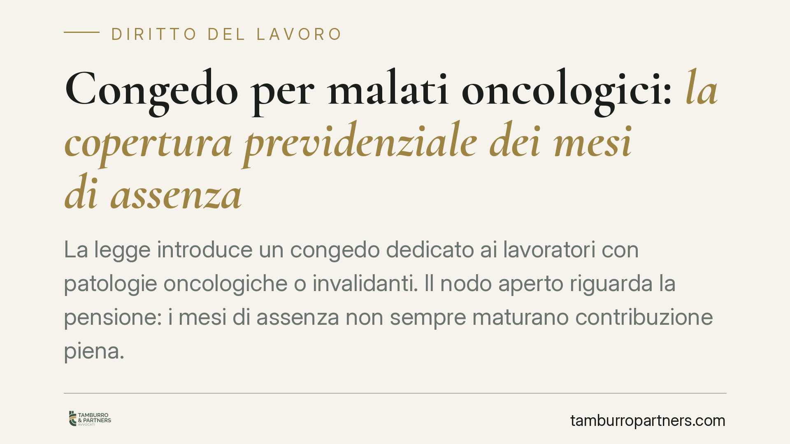

Congedo per malati oncologici: la copertura previdenziale dei mesi di assenza
La legge introduce un congedo dedicato ai lavoratori con patologie oncologiche o invalidanti. Il nodo aperto riguarda la pensione: i mesi di assenza non sempre maturano contribuzione piena. Il tema è la possibilità di recuperarli, a carico del lavoratore, tramite istituti previdenziali già esistenti. Comprendere costi e meccanismi è essenziale per non trovarsi, anni dopo, con un vuoto contributivo.

Il quadro normativo di riferimento
La Legge n. 106/2025 ha introdotto misure di tutela del lavoro per i soggetti affetti da patologie oncologiche, croniche e invalidanti, tra cui un periodo di congedo dedicato. L'obiettivo dichiarato è consentire al lavoratore di affrontare cure e percorsi terapeutici senza perdere il posto di lavoro.
Un punto richiede attenzione. Per i periodi di congedo che non godono di copertura figurativa automatica (ossia la contribuzione che l'ente previdenziale accredita gratuitamente in determinate assenze tutelate), il tempo trascorso fuori dal lavoro può tradursi in un buco contributivo. Questo incide in due modi distinti, da tenere separati: sul diritto alla pensione, cioè sul raggiungimento degli anni minimi di contributi richiesti, e sulla misura dell'assegno, cioè sul suo importo finale.
*Nota: alla data di redazione di questo contributo è attesa una circolare INPS di dettaglio sull'applicazione operativa della norma. Le istruzioni attuative vanno verificate direttamente sul portale dell'Istituto al momento della lettura, poiché possono modificare tempi e modalità qui descritti.*
Gli istituti per recuperare i periodi scoperti
Il recupero dei mesi privi di contribuzione piena non avviene tramite un meccanismo nuovo, ma attraverso due strumenti previdenziali consolidati, a carico economico del lavoratore.
Il primo è il riscatto, disciplinato in via generale dal D.Lgs. n. 184/1997, che consente di coprire con versamento volontario periodi altrimenti scoperti, valorizzandoli ai fini del diritto e della misura della pensione.
Il secondo è la prosecuzione volontaria dei versamenti, che permette al lavoratore di continuare a versare contributi autonomamente nei periodi in cui non lavora, previa autorizzazione dell'INPS.
In entrambi i casi l'onere è a carico dell'interessato. Il costo dipende da retribuzione di riferimento, anzianità contributiva e gestione di appartenenza, e non è uniforme: va calcolato caso per caso.
Il profilo fiscale: deducibilità, non azzeramento
I contributi versati per riscatto o prosecuzione volontaria sono fiscalmente deducibili. Il riferimento è l'art. 10, comma 1, lett. e), del TUIR (D.P.R. n. 917/1986), che ammette in deduzione dal reddito complessivo i contributi previdenziali e assistenziali versati in ottemperanza a disposizioni di legge, nonché quelli facoltativi alla gestione della forma pensionistica obbligatoria di appartenenza.
Un chiarimento necessario: la deducibilità riduce il costo effettivo dell'operazione, perché abbatte la base imponibile, ma non lo azzera. Il risparmio dipende dall'aliquota marginale del contribuente. Chi valuta il riscatto deve ragionare sul costo netto, non su quello lordo, ma deve comunque mettere in conto un esborso reale.
Implicazioni pratiche
Per il lavoratore in congedo la questione è concreta. Se i mesi di assenza restano scoperti, il rischio è duplice: rallentare il raggiungimento dei requisiti minimi e, soprattutto nel sistema di calcolo contributivo, ridurre l'importo dell'assegno futuro.
La valutazione non è automatica. Non per tutti il riscatto conviene allo stesso modo: pesano l'età, gli anni già versati, la vicinanza al pensionamento e la capacità di sostenere l'onere. In alcuni casi la differenza sull'assegno finale giustifica la spesa; in altri l'impatto è marginale rispetto al costo.
È quindi utile una simulazione individuale prima di decidere, confrontando lo scenario con e senza recupero dei periodi.
Cosa fare in concreto
- Richiedere l'estratto conto contributivo aggiornato sul portale INPS, per individuare con precisione i periodi scoperti o coperti solo parzialmente.
- Verificare la copertura figurativa del proprio congedo: non tutte le assenze generano lo stesso trattamento, e alcune potrebbero già risultare coperte.
- Chiedere un conteggio del costo di riscatto o prosecuzione volontaria all'INPS o tramite patronato, distinguendo l'importo lordo da quello netto al netto della deduzione fiscale.
- Valutare la convenienza in base ad anzianità contributiva, età e distanza dal pensionamento, con una simulazione sull'importo dell'assegno.
- Monitorare le istruzioni attuative dell'INPS e i termini eventualmente previsti per l'esercizio delle opzioni, che possono essere soggetti a decadenza.
Disclaimer
Contributo informativo a cura di Tamburro & Partners - Avv. Giuseppe Tamburro. Non costituisce parere legale.
Ogni storia di lavoro ha i suoi tempi.
Se gestisci HR e vuoi un confronto su contenzioso, ispezioni o licenziamenti, scrivi allo studio. Ti rispondiamo entro un giorno lavorativo.